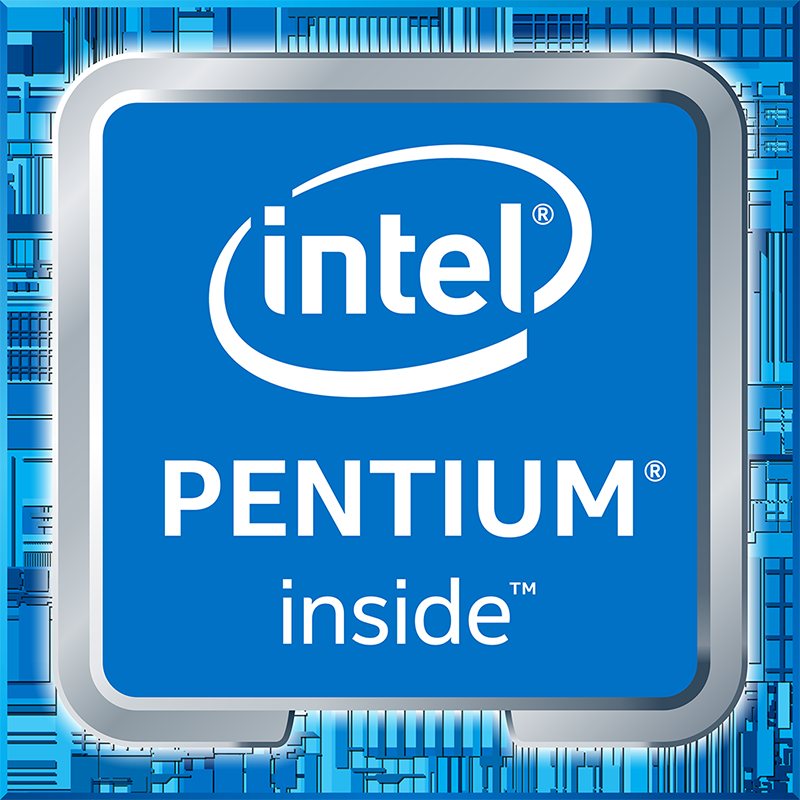
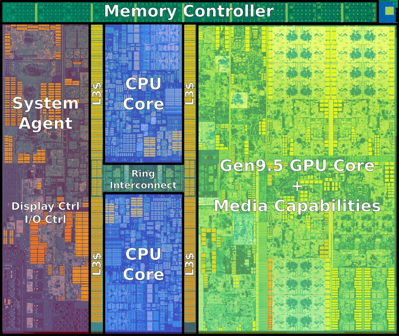
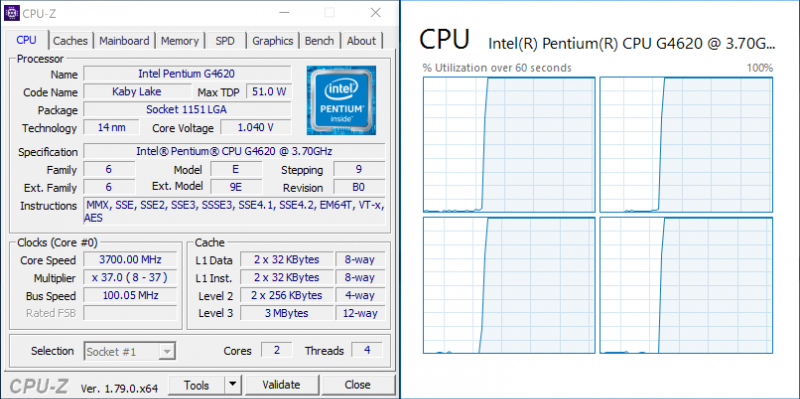
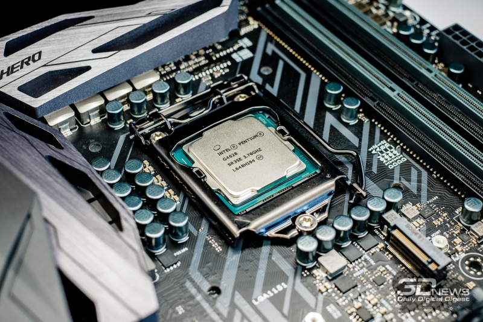
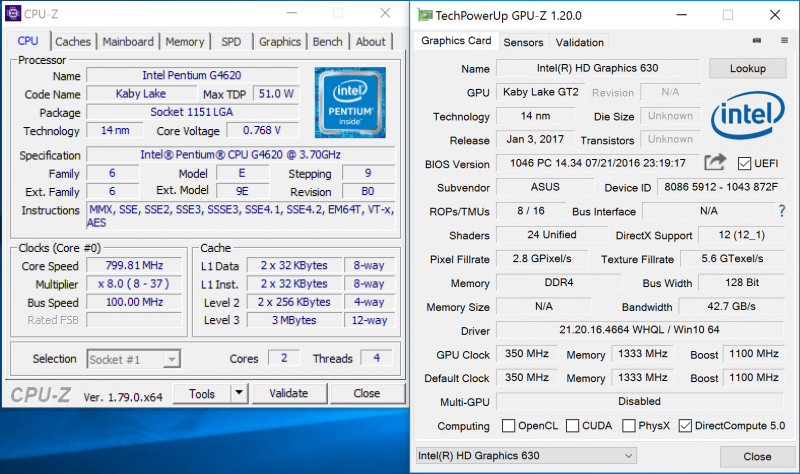

Многие привыкли видеть в компании Intel гигантского неповоротливого динозавра, который если и способен реагировать на внешние вызовы, то делает это запоздало и крайне медленно. В пользу верности такой метафоры говорит весь тот незначительный прогресс, которые претерпевают интеловские процессоры в последние несколько лет. Улучшение удельной производительности не более чем на 5 процентов в каждом новом поколении, отсутствие заметной прибавки в тактовых частотах новинок, многолетняя приверженность в массовом сегменте исключительно двухъядерному или четырёхъядерному дизайну чипов – из всех этих признаков и складывается ощущение отсутствия у Intel желания двигаться вперёд. И даже появление на рынке многообещающих процессоров AMD Ryzen не смогло заставить микропроцессорного гиганта хоть как-то адаптировать свою ценовую политику, хотя это и казалось в сложившихся условиях само собой разумеющимся ответом.
Однако кардинальные изменения в базовых характеристиках процессоров компании всё-таки ожидаются, причём в самом ближайшем будущем. И главным нововведением должно стать появление массовых процессоров с шестью вычислительными ядрами – такие новинки должны появиться в грядущем поколении чипов с кодовым именем Coffee Lake (Kaby Lake Refresh), выход которого запланирован на вторую половину текущего года.
О переменах можно говорить не только в будущем времени. Свидетельствуют о том, что Intel намерена существенно поднять производительность собственных предложений во всех ценовых сегментах, и некоторые уже произошедшие события. Так, не поднимая особого шума, заметное улучшение бюджетных процессоров с ценой менее $100 компания Intel провернула в начале этого года при выводе на рынок поколения чипов Kaby Lake. Серия Pentium, традиционно объединяющая в себе двухъядерные чипы, получила в своё распоряжение технологию Hyper-Threading, которая сделала обновлённых представителей этого семейства очень похожими на Core i3 – вдвое более дорогие процессоры среднего ценового диапазона.

Очевидно, что на усиление бюджетного модельного ряда Intel была вынуждена пойти не просто так, а под давлением обстоятельств. Дело в том, что в течение последних лет заметно улучшила свои позиции в нижнем рыночном секторе компания AMD. Не имея возможности предлагать дорогие процессоры с хорошей производительностью, AMD перенаправила чипы с архитектурой Bulldozer (и её производными), включая актуальные APU и процессоры семейства FX, на бюджетный сектор. В результате получилось так, что недорогие процессоры Intel стали серьёзно проигрывать в характеристиках альтернативным предложениям AMD, и обновлённые Pentium с Hyper-Threading – средство, которое Intel избрала для того, чтобы вернуть своим доступным решениям привлекательность в существенно изменившихся рыночных условиях.
Есть и ещё одна причина произошедших с Pentium перемен. Многие современные игровые приложения стали использовать как минимум четыре потока, и в геймерских системах, построенных на процессорах, которые могут обеспечить параллельное исполнение только двух потоков, начали возникать различного рода проблемы: от катастрофически низкой производительности до полной невозможности запуска новых игр. В результате Pentium стало невозможно рекомендовать для использования в недорогих игровых конфигурациях, что не устраивало Intel, которая позиционирует Pentium в том числе и в качестве возможного базиса для недорогих домашних компьютеров.
Как бы то ни было, сегодняшние процессоры Pentium с технологией Hyper-Threading теперь представляют собой крайне интересное предложение по сочетанию цены и производительности. Четыре потока по цене $60-80 – такого у Intel ещё не было. Именно поэтому мы решили подробно протестировать один из таких продуктов и попробовать разобраться, насколько хороши улучшенные Pentium,и в чём они всё-таки хуже представителей гораздо более дорогого семейства Core i3, на первый взгляд предлагающего практически то же самое, но заметно дороже.
Обновлённый модельный ряд Pentium
Традиционно процессоры семейства Pentium никогда не рассматривались энтузиастами как сколько-нибудь ценный материал при строительстве персональных компьютеров. Всё-таки тот уровень производительности, который они предлагали, можно было считать приемлемым лишь при работе в офисных приложениях, при простой интернет-активности или при потреблении мультимедийного контента, но не более того. Единственной моделью Pentium, которая смогла обратить на себя внимание передовой части сообщества, стала юбилейная версия G3258 – она допускала разгон и за счёт этого могла стать недорогой, но интересной игрушкой в руках начинающих оверклокеров. Но то был единичный пример.
Ничего особенного не обещал и перевод процессоров Pentium на современный дизайн Kaby Lake. Сама по себе эта микроархитектура не обеспечивает никаких улучшений в удельной производительности по сравнению с Skylake, поэтому максимум, чего можно было ждать от новых Pentium, – это некоторого увеличения тактовых частот. Однако компания Intel решила добавить линейке Pentium жизни и вместе с её переводом на дизайн Kaby Lake разблокировала технологию Hyper-Threading. В результате новые двухъядерные Pentium получили возможность исполнять четыре потока одновременно и в этом стали похожи на Core i3 – процессоры более высокого класса.
В свете произошедших изменений система классификации десктопных Kaby Lake разных серий приобрела следующий вид:
Число ядер
Hyper-Threading
AVX/AVX2
Turbo Boost
Celeron
2
нет
нет
нет
Pentium
2
есть
нет
нет
Core i3
2
есть
есть
нет
Core i5
4
нет
есть
есть
Core i7
4
есть
есть
есть
Если сравнивать эти новинки с прошлыми Pentium, относящимися к поколению Skylake, то улучшения не ограничиваются одним лишь добавлением технологии Hyper-Threading. Новые модели приобрели примерно на 100 МГц увеличившиеся тактовые частоты, а также получили официальную поддержку более скоростной памяти – DDR4-2400, в то время как в процессорах прошлого поколения поддерживалась только DDR4-2133.
Также изменения коснулись и интегрированного графического ядра. Новая графика Intel HD Graphics 630 (GT2) и HD Graphics 610 (GT1), как и в случае процессоров Kaby Lake старших семейств, может предложить аппаратное декодирование видео в разрешениях вплоть до Ultra HD в форматах VP9 и HEVC с 10-битной глубиной цвета, а также кодирование в формат HEVC с 10-битной цветностью и VP9 с 8-битной цветностью. Различия же между вариантами графического ядра состоят в 3D-производительности и числе исполнительных устройств. HD Graphics 630 обладает 24 устройствами и аналогична графике процессоров Core i7, i5 и i3, а HD Graphics располагает 12 исполнительными устройствами и может предложить лишь вдвое более низкие скоростные характеристики.

Всё это делает новые Pentium во многом похожими на представителей семейства Core i3: два ядра, усиленные технологией Hyper-Threading, традиционно были присущи исключительно им. Однако говорить о том, что с переходом на дизайн Kaby Lake процессоры Pentium стали эдаким продолжением модельного ряда Core i3 вниз, было бы всё-таки неверно. Дело в том, что Core i3 сохранили целый ряд принципиальных отличий от обновлённых Pentium, однако отличия эти без дополнительного объяснения не слишком заметны для обывателя.
Начать следует с того, что Core i3 предлагают более высокие тактовые частоты. Так, старший Pentium G4620 на целых 200 МГц медленнее младшего Core i3-7100. Во-вторых, в процессорах Pentium производитель отключил поддержку семейств векторных инструкций AVX и AVX2. Нельзя сказать, что такие инструкции используются повсеместно, но программное обеспечение для обработки изображений и видео на Core i3 будет работать заведомо лучше. В-третьих, системы, построенные на базе Pentium, не смогут воспользоваться преимуществами технологии Intel Optane Memory даже в случае их установки в материнские платы на чипсетах 200-й серии. Поддержка инновационных кеширующих накопителей на базе памяти 3D XPoint для бюджетных процессоров деактивирована на уровне драйвера Intel RST. И в-четвертых, Pentium не поддерживают набор инструкций для работы с моделью транзакционной памяти TSX-NI, но на данном этапе этот момент имеет значение только для разработчиков и потому вряд может классифицироваться как существенный изъян.
Подробнее о Pentium G4620
Для практического знакомства с семейством улучшенных процессоров Pentium поколения Kaby Lake мы взяли старшего представителя в семействе, Pentium G4620. Номинальная частота этого чипа – 3,7 ГГц, причём на этой частоте он и работает в реальности, поскольку никаких турборежимов в двухъядерных процессорах Intel не предусматривается. Частота изменяется лишь в моменты простоя – энергосберегающие технологии снижают её до 800 МГц.

Частотные характеристики Pentium G4620 таковы, что он очень похож на Core i3-6100 поколения Skylake. Причём аналогии можно проводить не только по числу вычислительных ядер, исполняемых потоков и по тактовым частотам. Полное соответствие есть и в размере кеша: как и младшие Core i3, Pentium G4620 располагает кеш-памятью третьего уровня объёмом 3 Мбайт. Нет отличий даже в тепловом пакете: Pentium G4620 вместе с большинством прочих интеловских двухъядерных процессоров, производимых по 14-нм технологии, имеет максимальное расчётное тепловыделение на уровне 51 Вт.

При этом Pentium G4620 стоит всего лишь $86, что делает его на фоне похожего Core i3-6100 гораздо более выгодным предложением. Фактически отсутствие поддержки AVX/AVX2.0-инструкций выливается в весомую 25-процентную скидку. Впрочем, Core i3-6100 – это представитель прошлого поколения Skylake, и за ту же цену сегодня можно приобрести Core i3-7100 с дизайном Kaby Lake. Такой процессор имеет более высокую номинальную частоту — на уровне 3,9 ГГц, то есть он будет быстрее Pentium G4620 при любом раскладе. Однако стоит ли 5-процентное различие в частоте 25-процентной наценки – вопрос очень неоднозначный.

Нередко можно услышать мнение о том, что, выпустив процессоры Pentium с Hyper-Threading, Intel убила всю привлекательность Core i3. Однако это не совсем так. Pentium можно рассматривать лишь в качестве альтернативы младшим процессорам этой серии.
Старшие же представители Core i3 интересны не только поддержкой AVX/AVX2.0-инструкций, но и выходящими за 4-гигагерцевую отметку частотами, а также более вместительным L3-кешем, размер которого доходит до 4 Мбайт. Кроме того, флагманский процессор в серии Core i3 – это полноценная оверклокерская модель с разблокированным множителем.
В Pentium G4620 же, как и во всех других Pentium, разгон заблокирован. Небольшой прирост скорости можно получить увеличением частоты базового тактового генератора (BCLK), но, имея в виду этот метод, рассчитывать в лучшем случае приходится лишь на 5-процентную прибавку в скорости.